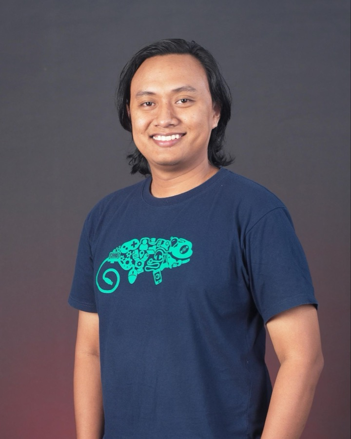
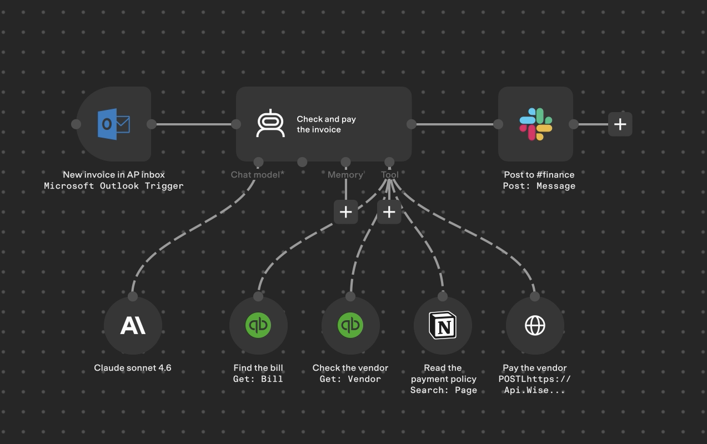

Membangun & men-deploy AI agent dengan Gemini API di Cloud Run
Estu Fardani · @tuanpembual

Nama saya
Cloud Platform Engineer at INA Digital Edu
gcp · k8s · terraform · CI/CD
@tuanpembual
Clone repo workshop:
git clone https://github.com/tuanpembual/barista-bot.git
Agent, function calling, agentic loop
Cloud Run + Secret Manager · 10 mnt
Walkthrough kode + test lokal · 15 mnt
Satu perintah Cloud Build · 5 mnt
Docker multi-stage · 10 mnt
Data sungguhan, FAQ
Banyak dari kita sudah memakai Gemini, ChatGPT, Claude, atau Copilot setiap hari. Kenapa perlu agent sendiri?
Aplikasi chat menunggu orang mengetik. Agent di HTTP bisa dipanggil alert, cron, Slack, CI.
Berjalan di GCP project sendiri, dengan service account yang izinnya kita atur.
Satu URL Cloud Run, perilaku yang sama untuk semua orang.
Menerima pertanyaan bahasa natural → investigasi sendiri → ringkasan + rekomendasi.
POST /askPesan → model menjawab → selesai.
Satu kali jalan.
Model memutuskan sendiri tool apa yang dipanggil, berapa kali, dalam urutan apa — sampai tugasnya selesai.
Operator: "Ada service yang bermasalah?" → list_services() ← tindakan 1: user-service degraded → get_recent_logs("user-service", "ERROR") ← tindakan 2: connection refused (database) → "user-service degraded karena koneksi DB ditolak sejak 30 menit lalu"
// 1. kita kirim pesan + daftar tools message: "Cek status user-service" tools: [list_services, check_service_health, get_recent_logs, get_deployment_status] // 2. Gemini membalas — bukan teks, tapi: function_call: { name: "check_service_health", args: {service_name: "user-service"} } // 3. kode KITA yang mengeksekusi, // hasilnya dikirim balik ke Gemini
toolDeclarations = buku menutools.go = dapur
Gemini memesan dari menu, kode kita yang memasak.
Kita yang mengontrol apa yang boleh dan tidak boleh dijalankan. Deskripsi tool yang jelas = agent memilih tool yang tepat.
Pesan + riwayat + daftar tools ke Gemini
Ada function_call di respons?
executeTool() lalu tambahkan hasil ke riwayat
Tidak ada call → ambil teks final
for range 5 { // batas aman: maksimal 5 putaran resp, err := generateWithRetry(ctx, client, contents, config) calls := resp.FunctionCalls() if len(calls) == 0 { return teksFinal } // 04 for _, fc := range calls { result := executeTool(ctx, fc.Name, fc.Args) // 03 ... } }
Fungsi Go biasa yang benar-benar dijalankan saat agent butuh informasi. Di workshop: data simulasi.
"Daftar menu" untuk Gemini: nama tool, deskripsi, parameter. Gemini memilih dari sini.
Retrieval-Augmented Generation: cari dokumen relevan dulu, baru menjawab berdasarkan dokumen itu.
Pernah lihat n8n? Tool otomasi visual (no-code) ini punya blok "AI Agent" yang isinya konsep yang sama: model + tools + loop. Bedanya, hari ini kita menulisnya sendiri — jadi setiap langkahnya terlihat.

Tidak ada traffic, tidak ada biaya instance.
Multi-stage build: cold start cepat.
2 juta request/bulan — cukup untuk workshop.
# 1. clone git clone https://github.com/tuanpembual/barista-bot.git cd barista-bot # 2. environment variables export PROJECT_ID="<project-id-anda>" export REGION="asia-southeast2" export GEMINI_API_KEY="<api-key-anda>" # 3. login & set project gcloud auth login # lewati di Cloud Shell gcloud config set project $PROJECT_ID
# 4. enable APIs gcloud services enable \ run.googleapis.com \ cloudbuild.googleapis.com \ artifactregistry.googleapis.com \ secretmanager.googleapis.com \ --project=$PROJECT_ID # 5. Artifact Registry repo gcloud artifacts repositories create barista-bot \ --repository-format=docker \ --location=$REGION \ --project=$PROJECT_ID
| File | Isi |
|---|---|
main.go | HTTP server: GET /, POST /ask |
agent.go | System prompt + agentic loop + retry |
tools.go | 4 tools + data simulasi |
# terminal 1 (di folder barista-bot) go run . # terminal 2 curl http://localhost:8080/ curl -X POST http://localhost:8080/ask \ -H "Content-Type: application/json" \ -d '{"message":"Ada service yang bermasalah?"}' curl -X POST http://localhost:8080/ask \ -H "Content-Type: application/json" \ -d '{"message":"Kenapa notification-worker tidak bisa start?"}'
# Stage 1: compile FROM golang:1.27-alpine AS builder WORKDIR /app COPY go.mod go.sum ./ RUN go mod download COPY . . RUN CGO_ENABLED=0 go build -o barista-bot . # Stage 2: hanya binary FROM alpine:3.20 RUN adduser -D appuser COPY --from=builder /app/barista-bot . USER appuser CMD ["./barista-bot"]
docker build -t barista-bot:local . docker run --rm -p 8080:8080 \ -e GEMINI_API_KEY=$GEMINI_API_KEY \ barista-bot:local curl http://localhost:8080/ # terminal 2 # untuk Cloud Run: wajib amd64 docker build --platform linux/amd64 \ -t barista-bot:amd64 .
arm64 secara default. Lupa --platform linux/amd64 → Cloud Run error exec format error.. di akhir docker build.# 1. push image gcloud auth configure-docker $REGION-docker.pkg.dev IMAGE="$REGION-docker.pkg.dev/$PROJECT_ID/barista-bot/app:v1" docker tag barista-bot:amd64 $IMAGE docker push $IMAGE # 2. simpan API key echo -n "$GEMINI_API_KEY" | \ gcloud secrets create gemini-api-key \ --data-file=- --replication-policy=automatic
# 3. izinkan Cloud Run baca secret PROJECT_NUMBER=$(gcloud projects describe $PROJECT_ID \ --format="value(projectNumber)") gcloud secrets add-iam-policy-binding gemini-api-key \ --project=$PROJECT_ID \ --member="serviceAccount:${PROJECT_NUMBER}-compute@developer.gserviceaccount.com" \ --role="roles/secretmanager.secretAccessor" # secret sudah ada? tambah versi baru: echo -n "$GEMINI_API_KEY" | \ gcloud secrets versions add gemini-api-key --data-file=-
# 4. deploy gcloud run deploy barista-bot \ --image=$IMAGE --region=$REGION \ --allow-unauthenticated \ --set-secrets="GEMINI_API_KEY=gemini-api-key:latest" \ --memory=512Mi --port=8080 \ --min-instances=0 --max-instances=5 # log live (terminal kedua, jawab Y jika diminta) gcloud beta run services logs tail barista-bot \ --region=$REGION
# test live SERVICE_URL=$(gcloud run services describe barista-bot \ --region=$REGION --format="value(status.url)") echo $SERVICE_URL curl $SERVICE_URL/ curl -X POST $SERVICE_URL/ask \ -H "Content-Type: application/json" \ -d '{"message":"Cek semua service, ada yang bermasalah?"}' # alternatif log tanpa beta gcloud run services logs read barista-bot \ --region=$REGION --limit=30
# 1. izin untuk SA Cloud Build (sekali) CB_SA=$(gcloud builds get-default-service-account \ --project=$PROJECT_ID \ --format="value(serviceAccountEmail)" | sed 's|.*/||') echo "Cloud Build SA: $CB_SA" for ROLE in roles/run.admin roles/iam.serviceAccountUser \ roles/artifactregistry.writer roles/logging.logWriter \ roles/storage.objectViewer; do gcloud projects add-iam-policy-binding $PROJECT_ID \ --member="serviceAccount:${CB_SA}" --role="$ROLE" \ --condition=None --quiet >/dev/null done # 2. build + push + deploy (±3 menit) gcloud beta builds submit --config=cloudbuild.yaml
# 3. revision baru aktif? gcloud run services describe barista-bot \ --region=$REGION \ --format="value(status.latestReadyRevisionName,spec.template.spec.containers[0].image)" # barista-bot-00002-xxx .../barista-bot/app:v2 # 4. URL sama, tanya agent lagi SERVICE_URL=$(gcloud run services describe barista-bot \ --region=$REGION --format="value(status.url)") curl $SERVICE_URL/ curl -X POST $SERVICE_URL/ask \ -H "Content-Type: application/json" \ -d '{"message":"Ada service yang bermasalah?"}' # 5. tool apa yang dipanggil? gcloud run services logs read barista-bot \ --region=$REGION --limit=20 | grep "tool call"
Yang berubah hanya sumber data. toolDeclarations dan agentic loop tetap sama.
| Tool | Simulasi | Real · tools_real.go |
|---|---|---|
list_services | map services | Cloud Run Admin API |
check_service_health | map services | Cloud Run Admin API |
get_recent_logs | map mockLogs | Cloud Logging API |
get_deployment_status | map services | Cloud Run Admin API |
gcloud auth application-default login export GEMINI_API_KEY=$(gcloud secrets versions access latest --secret=gemini-api-key) TOOLS_MODE=real GOOGLE_CLOUD_PROJECT=$PROJECT_ID REGION=$REGION go run . # hanya di lokal # terminal 2 curl -X POST http://localhost:8080/ask -H "Content-Type: application/json" \ -d '{"message":"Ada service Cloud Run yang bermasalah? Cek juga log error-nya."}'
# hapus Cloud Run service gcloud run services delete barista-bot \ --region=$REGION --project=$PROJECT_ID --quiet # hapus Artifact Registry repo (beserta semua image) gcloud artifacts repositories delete barista-bot \ --location=$REGION --project=$PROJECT_ID --quiet # opsional: hapus secret gcloud secrets delete gemini-api-key --project=$PROJECT_ID --quiet
Untuk data yang berubah terus: status service, log, deployment.
Untuk pengetahuan yang relatif tetap: runbook, SOP, dokumentasi.
RAG sendiri adalah salah satu jenis tool. Paling kuat jika digabung:
list_services → get_recent_logs → search_runbook → diagnosis + langkah sesuai SOP
github.com/tuanpembual/barista-bot
Jangan lupa Cleanup: service, Artifact Registry, secret.